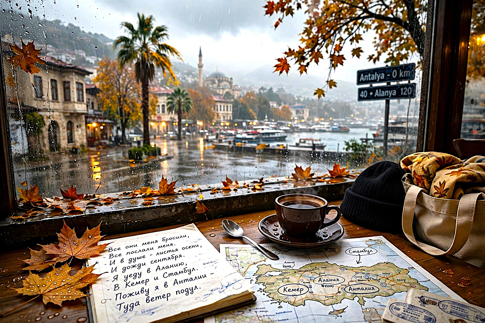

Все они меня бросили,
Все послали меня.
И в душе - листья осени,
И дожди сентября.
Все послали меня.
И в душе - листья осени,
И дожди сентября.
Я уеду в Аланию,
В Кемер и Стамбул.
Поживу я в Анталии -
Туда ветер подул.
В Кемер и Стамбул.
Поживу я в Анталии -
Туда ветер подул.
Рамо Бин Ях 27.07.2026 г.
«Если эти строки отозвались в вашем сердце, вы можете поддержать выход новых стихотворений»
Поддержать автора